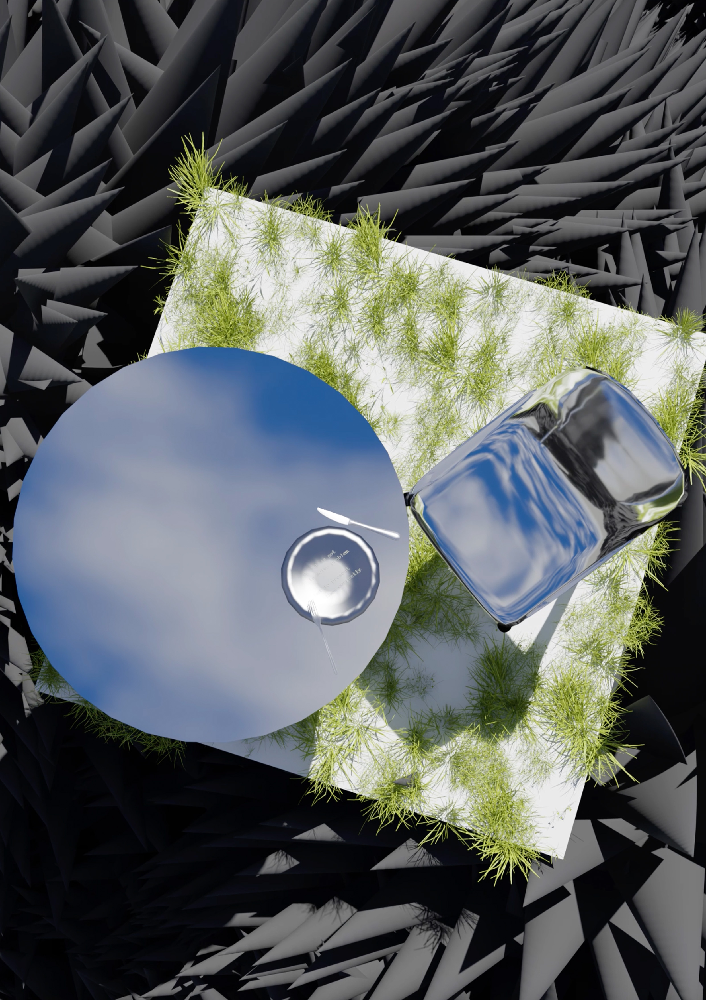

[kidzmari ヒューモアとしてのライフのためのデザイン ] flyer

Medium Announcement video
year June2025
software blender / photoshop / Premiere Pro / Illustrator
パワー構造に抗いたいけど、それも構造の中にある。矛盾があり、不完全を自覚しているにも関わらず、提示し続けている。
不完全だからこそ、受け取った人は想像で埋めるしかない。受け取り手に解釈の余地がある。
その構造は、ライブという場の不確かさや即興性と強く結びついているように感じます。
配信音源のように整えられたものではなく、空間やノリに左右される予測不能なライブこそ、音楽における“ヒューモア”が最も現れる場だと思います。
“The artist’s task is not to solve problems, but to present them correctly.”
映像の冒頭に出てくるメッセージは「チェーホフの視点」から引用したもので、これは彼らに贈りたいメッセージです。映像もまた、矛盾に囲まれながらも高貴に務めるその姿を表現したものになっています。